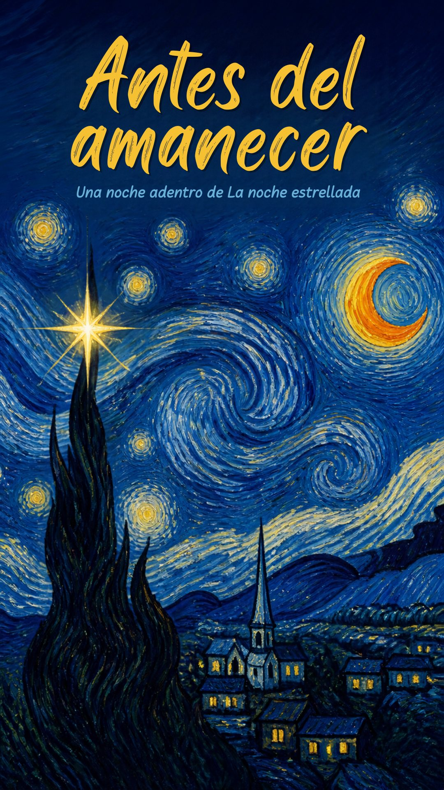

Una noche adentro de La noche estrellada, de Vincent van Gogh (1889)
Pintando el pueblo…
Pulgar izquierdo para caminar, arrastrá para mirar y tocá a la gente para hablar. Arriba tenés el mapa.
En el cel también podés mirar moviéndolo (botón del celular). Mejor con sonido.
Este navegador no pudo abrir la escena 3D. Probá con Chrome actualizado.